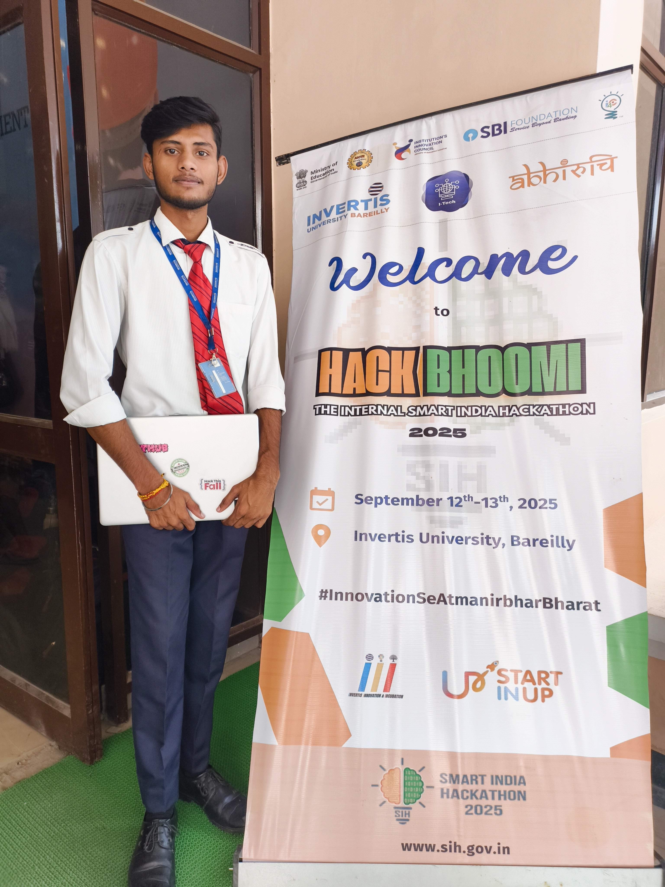
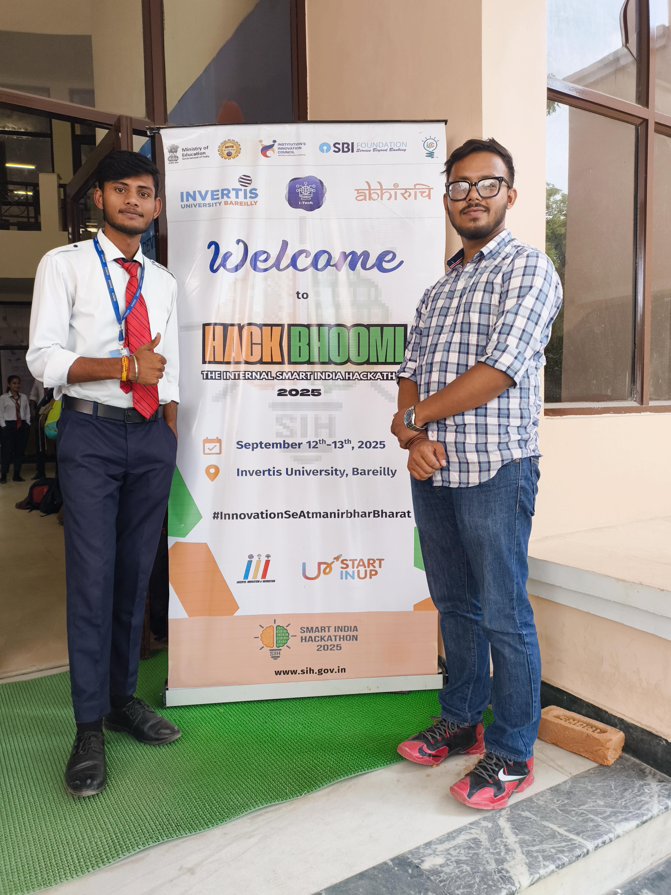
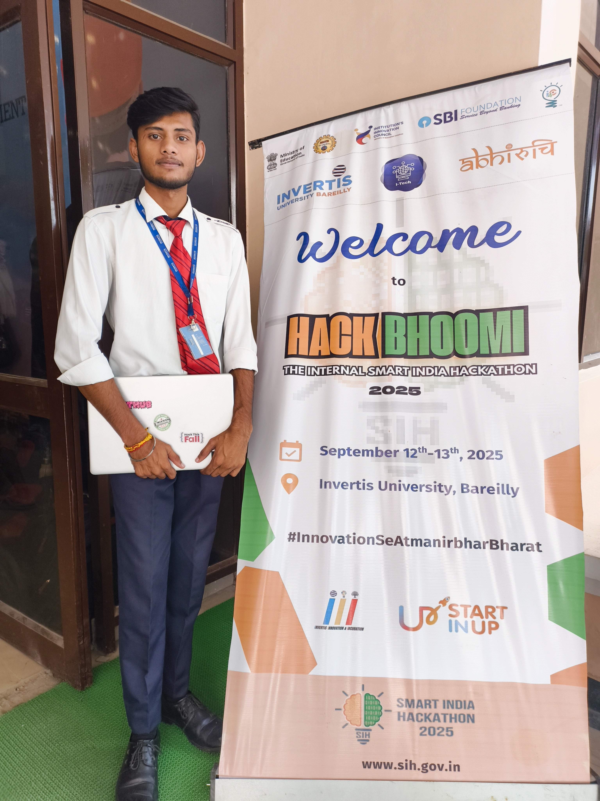
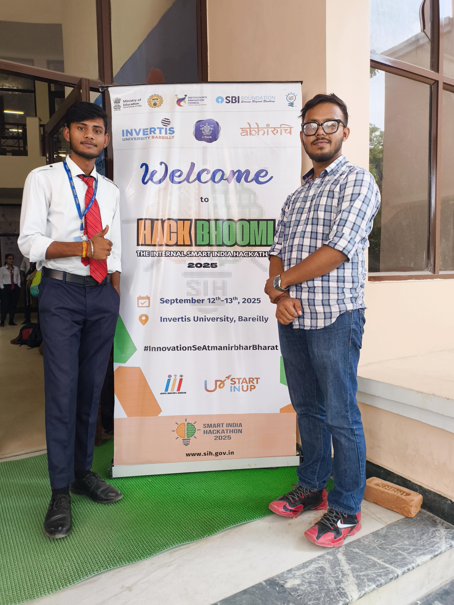

Hackbhoomi Smart India Hackathon
About Hackbhoomi Smart India Hackathon
Hackbhoomi Smart India Hackathon was a flagship government-sponsored 36-hour innovation marathon focused on developing technological solutions for pressing national challenges. This prestigious hackathon, part of the Digital India initiative, brought together the brightest minds from across the country to create impactful solutions addressing real-world problems faced by various government ministries and departments. The event emphasized innovation, social impact, and scalable technology solutions that could be implemented nationwide.
Hackathon Highlights
- Digital India Solutions: Developing technology solutions for e-governance, digital literacy, and citizen services
- Government Problem Statements: Tackling real challenges from ministries like Health, Education, Agriculture, and Defense
- Social Impact Focus: Creating solutions for rural development, women empowerment, and inclusive growth
- Technology Innovation: Leveraging AI, IoT, blockchain, and mobile technologies for nationwide implementation
- Mentorship from Experts: Guidance from government officials, industry leaders, and technology experts
- Prototype Development: Building functional prototypes with potential for real-world deployment
Challenge and Solution Development
Problem Statement Analysis
Our team selected a challenging problem statement related to rural healthcare access and digital health monitoring. We conducted extensive research on the current healthcare infrastructure gaps in rural India and identified key technological interventions that could make a significant impact.
Solution Architecture and Development
Developed a comprehensive mobile and web-based platform for rural healthcare delivery, including telemedicine capabilities, health record digitization, and AI-powered preliminary diagnosis. The solution integrated multiple technologies to ensure scalability and accessibility in low-resource environments.
Presentation and Government Evaluation
Presented our solution to a panel of government officials, healthcare experts, and technology evaluators. The presentation included demonstration of the working prototype, implementation roadmap, and potential impact assessment for nationwide deployment.
Achievements and Recognition
- Successfully developed a functional prototype for rural healthcare digital platform within 36 hours
- Received recognition from government officials for innovative approach to healthcare accessibility
- Gained deep insights into government technology procurement and implementation processes
- Enhanced skills in rapid prototyping, cross-platform development, and system integration
- Built valuable network with government technology leaders and policy makers
- Earned certificate of participation in prestigious national-level government hackathon
Hackathon Gallery


 



Solution Technologies & Impact Areas
Mobile Development
Cross-platform mobile application for rural healthcare workers and patients, optimized for low-bandwidth connectivity.
Cloud Infrastructure
Scalable cloud-based backend architecture for handling millions of rural healthcare records and real-time data processing.
AI Integration
Machine learning algorithms for preliminary health screening, symptom analysis, and medical recommendation systems.
Data Security
Government-grade data encryption, privacy compliance, and secure health record management for sensitive patient information.
Digital India
Alignment with Digital India initiatives including Aadhaar integration, digital health ID, and e-governance frameworks.
Social Impact
Addressing healthcare accessibility in rural areas, reducing medical costs, and improving health outcomes for underserved populations.